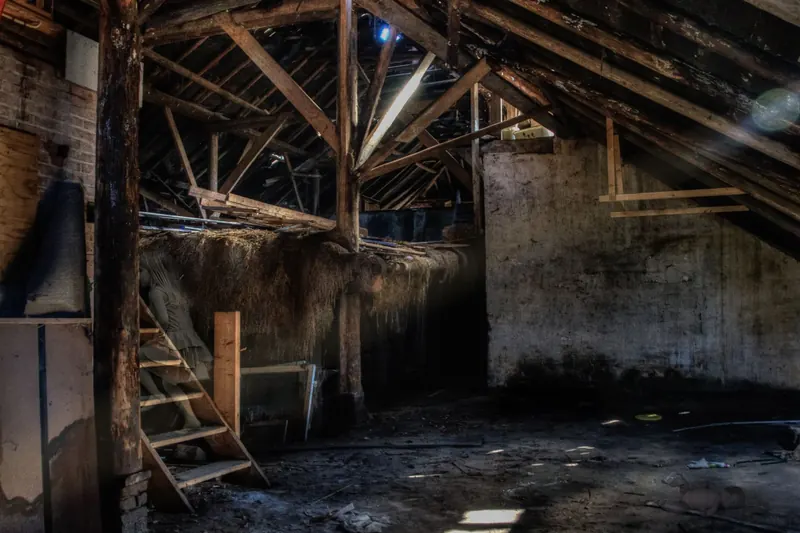

Quick Answers
How deep should blown-in insulation be?
For R-38, about 13.5 inches of blown fiberglass or 10.4 settled inches of cellulose. For R-49, about 17 inches of fiberglass or 13.3 settled inches of cellulose. Those depths come from one manufacturer's chart for each material, and products vary, so we blow to the chart printed on the bags we are using.
Fiberglass or cellulose for a Knoxville attic?
Either reaches the R-value you want; cellulose gets there in fewer inches, at about R-3.65 per settled inch versus R-2.8 to R-2.9 for fiberglass on the charts we use. Fiberglass is lighter and its chart shows no settling. Cellulose settles slightly, and Fixr prices it a little higher per square foot.
How do I know the attic got the depth I paid for?
Count the bags and read the depth markers. Every coverage chart lists a minimum number of bags per 1,000 square feet and a minimum depth for each R-value, and the installer has to meet both. We staple depth rulers to the framing across the attic and write the bag count on your invoice.
Signs Your Attic Needs More
Take a tape measure into the attic. ENERGY STAR converts existing depth at roughly R-3 per inch and recommends R-60 for an empty Zone 4A attic, or R-49 where 3 to 4 inches already sit on the floor. Signs an attic is due:
- The tops of the ceiling joists show across most of the attic.
- Insulation measures 6 inches or less, roughly R-18 by that rule of thumb.
- Bare spots and trenches where HVAC or cable crews walked through.
- Old insulation that is matted, stained by a roof leak or fouled by rodents, which comes out first through insulation removal.
How Blown-In Insulation Works
A blowing machine pushes loose fill through a long hose into the attic, but most of the job is the prep before the hose comes up.

Seal the attic floor
Top plates, wire and plumbing holes, the chase around the flue and the attic hatch get sealed with foam or caulk. DOE's homeowner guide says to seal attic air leaks before adding insulation, because loose fill does not stop air.
Set baffles at the eaves
A baffle in each rafter bay keeps loose fill out of the soffit, so the intake vents stay open.
Dam the clearances
One manufacturer's instructions call for keeping loose fill 3 inches from recessed lights not made for insulation contact, and clear of flue clearances. We build dams around those spots and around the hatch.
Blow to the chart
We blow in even passes until every ruler reads the target depth and the bag count meets the chart, then insulate and weatherstrip the hatch.
| Target | Blown fiberglass, one chart (27.5 lb bags) | Cellulose, one chart (25 lb bags) |
|---|---|---|
| R-38 | 13.5 in, 19 bags per 1,000 sq ft | 11.2 in installed, 10.4 in settled, 52.6 bags per 1,000 sq ft |
| R-49 | 17 in, 25 bags per 1,000 sq ft | 14.3 in installed, 13.3 in settled, 70.8 bags per 1,000 sq ft |
The cellulose chart implies about 7 percent settling, and Green Building Advisor's editor tells installers to plan on 13 percent, so we blow cellulose to the installed number. The fiberglass maker notes that loose-fill fiberglass in open attics can lose some performance in extreme cold through convection; with a January normal low of 30.0 F, Knoxville attics spend little time there.
Blown-In Insulation Cost in Knoxville
Price depends on attic area, target depth, what is already up there, how much air sealing the floor needs and whether old material comes out first.
| Source | Item | Range |
|---|---|---|
| Fixr, August 2025 | Blown-in fiberglass, installed | $1.65 to $2.60 per sq ft |
| Fixr, August 2025 | Blown-in cellulose, installed | $1.75 to $3.80 per sq ft |
| Fixr, August 2025 | Typical project | $3,000 to $7,000, average $5,000 |
| Bob Vila, July 2022 | Blown-in fiberglass | $0.50 to $1.10 per sq ft |
| Bob Vila, July 2022 | Whole project | $930 to $2,085, average $1,507 |
These are national guide ranges checked in October 2026, not our prices, and the July 2022 Bob Vila figures run well below Fixr's newer ones. For a 1,600 square foot attic, Fixr's ranges work out to about $2,640 to $4,160 for fiberglass and $2,800 to $6,080 for cellulose. Blowing that attic from bare to R-49 takes about 40 bags of the fiberglass on the chart above, or about 113 bags of the cellulose. More in our insulation pricing guide.
TVA EnergyRight lists a $300 attic insulation rebate when the installer belongs to its Quality Contractor Network, so confirm eligibility before work starts. The federal 25C credit does not cover attic work placed in service after 2025. Call (865) 564-7823 for a free estimate that prices both materials.
Attic Insulation in the East Tennessee Climate
Tennessee's statewide code sets R-38 as the Zone 4 ceiling minimum. Our attics work in both seasons: NOAA's normals give Knoxville about 3,528 heating and 1,574 cooling degree days a year, so depth beyond code pays off in January and in July.
Ductwork changes the plan. DOE's Home Energy Score guide says leaky ducts in attics or crawl spaces can account for 20 percent or more of heating and cooling energy loss. If your air handler and ducts sit in the attic, bringing the attic inside with roof deck foam may beat burying the ducts in loose fill; our attic insulation page compares both. Bath fans venting into the attic get rerouted outdoors first, since that summer moisture ends up in the loose fill.
What the Free Estimate Includes
When you compare blown insulation installers near you, ask each one for a bag count and a target depth in writing. Ours covers:
- Current depth and condition of the insulation, and attic floor area.
- A list of air leaks, recessed lights, flues and fan ducts to deal with first.
- Side by side prices for fiberglass and cellulose at the R-value you choose.
- A written price with the bag count and target depth stated.
Blown-In Insulation FAQ
Related Services
- Air sealing: the attic floor work that comes before any loose fill.
- Attic insulation: when roof deck foam suits the house better than a deeper floor.
- Fiberglass batts: for open walls and floors that loose fill cannot reach.
Where We Blow Attics Most
- Farragut: a 1992 median build year, with many 1990s attics ready for a top-up.
- Powell: the 2000s were the biggest building decade in ZIP 37849.
- Karns: about 44 percent of homes in ZIP 37931 went up in 2000 or later.
- Alcoa: original company homes from the 1917 to 1920 building program.
- Lenoir City: about 47 percent of homes predate 1980.
Book a Blown-In Estimate
Call (865) 564-7823 or send the form for a free estimate on your attic.